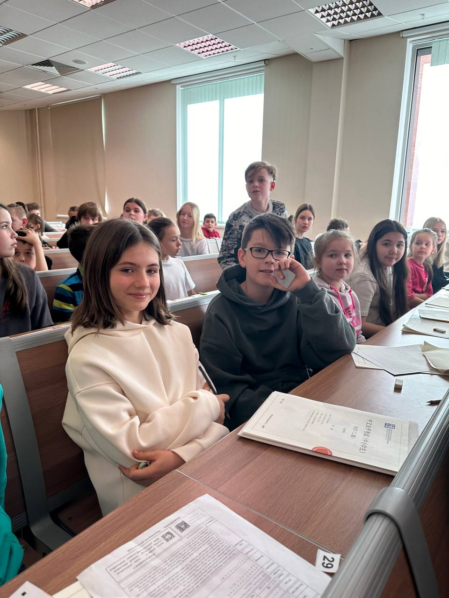

Экзамены HSK
Подготовка к HSK 4

HSK 4 — четвёртый уровень экзамена по китайскому (путунхуа) для иностранцев; организатор — CTI (Chinese Testing International) под эгидой CLEC, бывшего Hanban. Для сдачи нужно знать 1200 слов (600 новых сверх HSK 3). Экзамен состоит из трёх разделов — аудирование, чтение, письмо — всего 100 вопросов, около 105 минут (включая 5 минут на анкету). Максимум — 300 баллов (по 100 за раздел), проходной — 180 из 300 (60%), минимума по отдельному разделу нет. Справка о результатах действует 2 года для поступления в вузы; уровень соответствует примерно B1–B2 по CEFR.
Чтобы сдать HSK 4, нужно знать 1200 слов и набрать 180 из 300 баллов (60%). Разделы — аудирование, чтение, письмо, всего ~105 минут. Минимального балла по разделу нет, поэтому сильный раздел компенсирует слабый. Учтите переход на HSK 3.0 с обязательным устным HSKK: сверьте актуальный формат на chinesetest.cn перед регистрацией.
Что такое HSK 4 и зачем он нужен
HSK 4 — это рубеж «свободно говорю». Официальное описание уровня звучит так:
«Сдавшие HSK 4 могут свободно беседовать по-китайски на широкий круг тем и достаточно бегло общаться с носителями языка».
— официальный дескриптор уровня HSK 4, HSK Level 4 (Институт Конфуция)
На практике HSK 4 нужен для трёх вещей: поступления в вузы Китая, рабочей визы и подтверждения уровня для работодателя. Большинство университетов КНР требуют для бакалавриата минимум HSK 4, и на инженерные и естественно-научные программы его обычно достаточно.
«Научно-технические программы, как правило, принимают HSK 4 (180–210 баллов), тогда как гуманитарные и социальные — чаще HSK 5 или HSK 6».
— обзор требований вузов, ImproveMandarin: HSK requirements
Соответствие CEFR (B1–B2)
По европейской шкале HSK 4 находится в диапазоне B1–B2. Официально Hanban заявляет B2, но многие преподаватели считают, что реально это ближе к B1. Для поступления важнее не буква уровня, а конкретный балл, который требует ваш вуз.
История
От «для себя» до поступления в китайский вуз
Расскажу, зачем это всё, на живом примере. Пару лет назад ко мне пришла студентка, назовём её Аней, — начинала с нуля, «просто для себя». Через год регулярных занятий она вышла на HSK 3, а ещё за несколько месяцев добрала лексику и грамматику до HSK 4.
А дальше случилось то, чего она сама не планировала: с сертификатом HSK 4 Аня подала документы на инженерную программу в китайский университет — там как раз хватало этого уровня. Экзамен из «галочки для себя» превратился в билет.
Я вижу это постоянно, в том числе на себе: я докторант Шаньдунского университета и знаю изнутри, что для приёмной комиссии HSK — не формальность, а первый фильтр. Поэтому к нему стоит готовиться не «на удачу», а по структуре. О ней ниже.

Структура экзамена: аудирование, чтение, письмо
HSK 4 состоит из трёх разделов и ста вопросов. Порядок фиксированный, между разделами перерывов нет.
| Раздел | Вопросов | Время | Что проверяет |
|---|---|---|---|
| Аудирование | 45 | ≈ 30 минут | Понимание речи на слух, диалоги и монологи |
| Чтение | 40 | 40 минут | Порядок слов, пропуски, понимание текста |
| Письмо | 15 | 25 минут | Составление предложений, письмо иероглифов |
| Итого | 100 | ≈ 105 минут | + 5 минут на заполнение анкеты |
Сколько слов и какая грамматика нужны
Словарный минимум HSK 4 — 1200 слов, из них 600 новые по сравнению с HSK 3. Это тот порог, после которого лексика перестаёт быть «списком к экзамену» и начинает работать в живой речи.
Из грамматики к этому уровню закрывают ключевые конструкции: условие 如果…就 (rúguǒ…jiù, «если…то»), сравнение 越…越 (yuè…yuè, «чем…тем»), результативные и направительные морфемы, конструкцию 把 (bǎ). Их важно не заучить, а довести до автоматизма в устной речи — на письме и в аудировании они всплывают постоянно.
Система баллов и как проходит сдача
Максимум — 300 баллов, по 100 за каждый раздел. Проходной — 180 из 300, то есть 60%. Важный нюанс, который многих спасает: минимального балла по отдельному разделу нет. Сильное аудирование компенсирует слабое письмо, и наоборот. Это стоит использовать при подготовке: подтягивать в первую очередь самый «дешёвый» для вас раздел.
Экзамен письменный, проходит в аккредитованном центре или онлайн. Справка о результатах, по данным профильных ресурсов, действует ограниченный срок:
«Сам сертификат HSK бессрочен, но справка о результатах действительна два года — именно её принимают при поступлении в вузы Китая».
— ImproveMandarin: срок действия результатов HSK
HSK 4 по новой системе HSK 3.0
Здесь главное, что нужно знать в 2026 году. HSK переходит на новую систему HSK 3.0: вместо 6 уровней — 9, обновлённая лексика (включая современные слова вроде 人工智能, «искусственный интеллект»), и главное для разговорной части — устный экзамен HSKK становится обязательным начиная с HSK 3.
Синтабус HSK 3.0 опубликован 15 ноября 2025 года, полное внедрение в мире — с 1 июля 2026 года. Формат и требования по уровню могут отличаться от привычной редакции 2.0. Перед регистрацией обязательно сверьтесь с официальным сайтом chinesetest.cn.
План подготовки по неделям
Срок зависит от базы. Если вы уже на HSK 3, до HSK 4 обычно идут 1–1,5 года в спокойном режиме или интенсивный добор за 4–8 недель перед датой. Рабочая схема на интенсиве:
| Этап | Фокус |
|---|---|
| Недели 1–3 | 600 новых слов блоками + грамматика (如果…就, 越…越, 把) |
| Недели 4–6 | Аудирование и чтение на скорость, разбор типов заданий |
| Недели 7–8 | Пробные тесты на время, письмо, работа над слабым разделом |
Типичные ошибки на экзамене
Не следят за временем в чтении: 40 вопросов за 40 минут — это минута на вопрос, застреваешь на одном и теряешь пять лёгких в конце.
Копят один сильный раздел и забивают на слабый, забывая, что порог общий: недобор в письме легко утопит хороший результат.
Готовятся по старым спискам, не сверяясь с переходом на HSK 3.0 и обязательным HSKK. Формат стоит проверять до, а не после регистрации.
Частые вопросы (FAQ)
Сколько баллов нужно, чтобы сдать HSK 4?
180 из 300 баллов (60%); минимального балла по отдельному разделу нет.
Сколько слов нужно для HSK 4?
1200 слов, из которых 600 — новые по сравнению с HSK 3.
Сколько времени готовиться к HSK 4?
При базе уровня HSK 3 — обычно 1–1,5 года; интенсивный план на добор — от 4–8 недель.
Действует ли ещё HSK по старой системе?
Идёт переход на HSK 3.0 (полное внедрение в мире — с июля 2026); сверяйтесь с chinesetest.cn.
Хотите сдать HSK 4 с первого раза? На диагностическом уроке мы определим ваш текущий уровень, найдём слабый раздел и соберём план подготовки под вашу дату экзамена.
Записаться на диагностический урок →
Или напишите слово ЭКЗАМЕН в личные сообщения @manager_kitai_school — подберём формат подготовки. Без обязательств: решение о продолжении — после урока.
Дальше по теме: если ещё выбираете срок и цель, посмотрите разбор за сколько реально выучить китайский с нуля — сроки по уровням HSK и ориентир FSI.
Источники
- chinesetest.cn — официальный сайт экзамена HSK (актуальный формат, регистрация, HSK 3.0).
- HSK Level 4 (Институт Конфуция) — официальное описание уровня и структуры.
- China Education Center: HSK Level 4 — разделы, число вопросов, баллы.
- ImproveMandarin: срок действия результатов HSK — 2 года для поступления.
- ImproveMandarin: требования вузов по HSK — какой уровень нужен для поступления.
- StudyCLI: новый HSK 3.0 — 9 уровней, обязательный HSKK, сроки внедрения.
- Википедия: HSK — общая справка об экзамене.
Желаем удачи на экзамене! 加油！
Автор статьи
Юлия Горяина
Китаист и лингвокоуч, докторант Шаньдунского университета (山大), преподаватель МГУ ВШБ. Более 20 лет практики с китайскими компаниями — TCL, Great Wall Motors, FAW. Основатель международной лицензированной онлайн-школы китайского языка Kitai School.